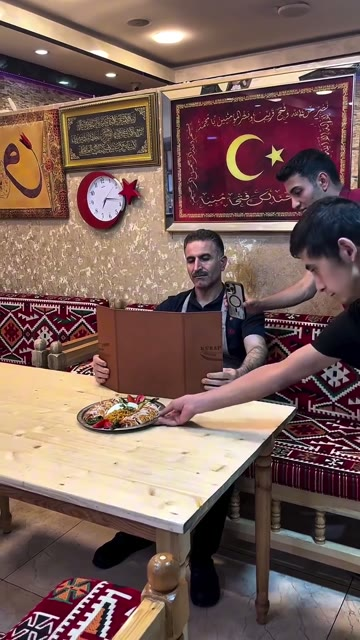
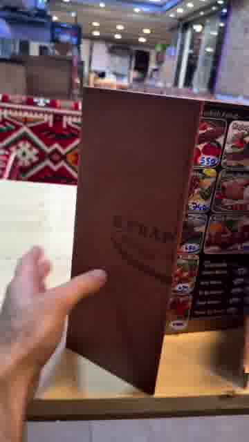
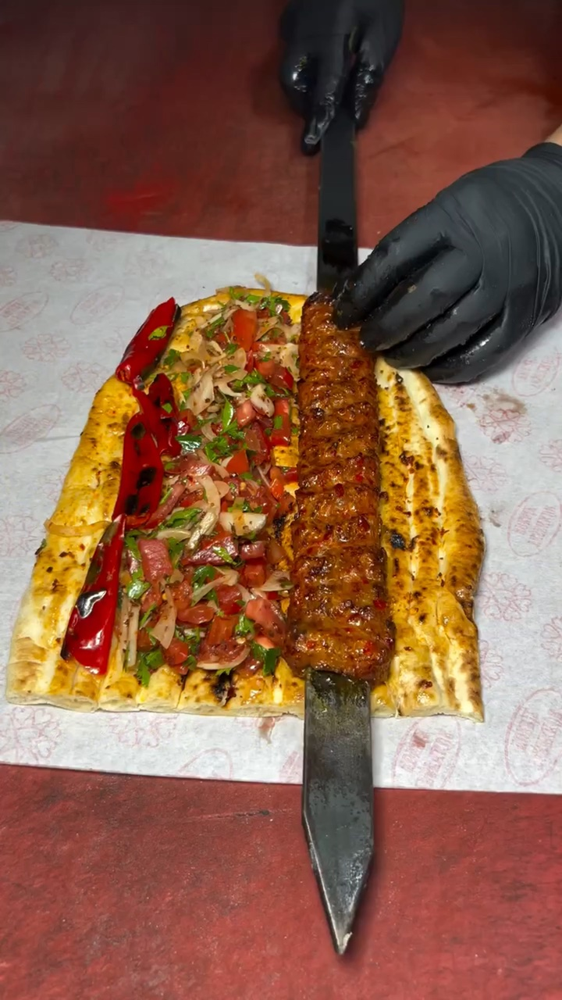
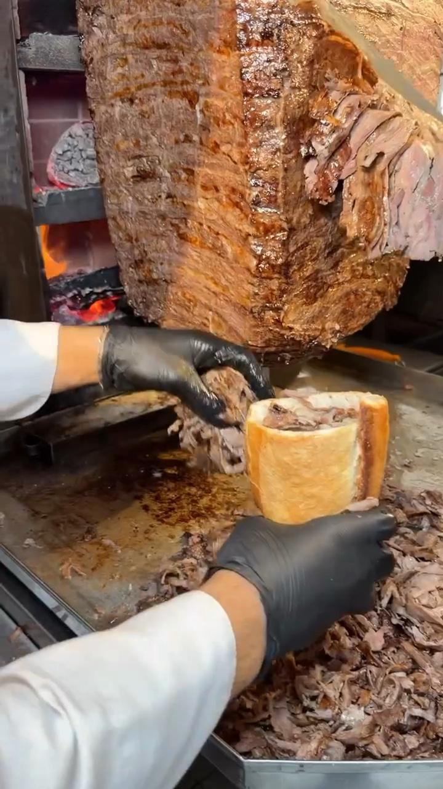
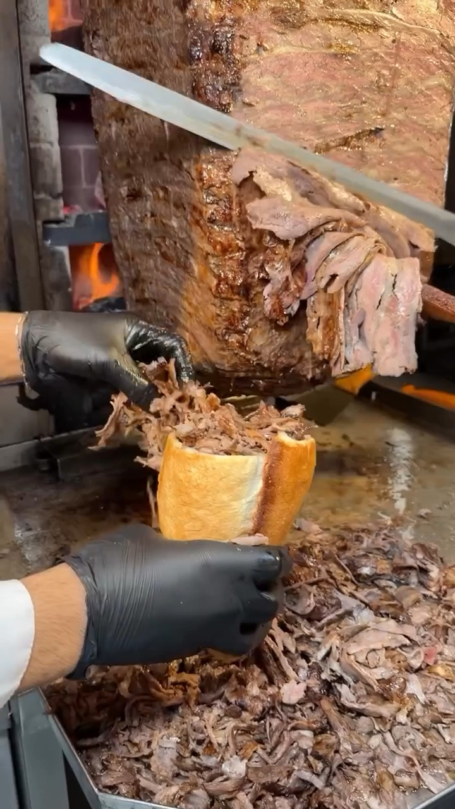
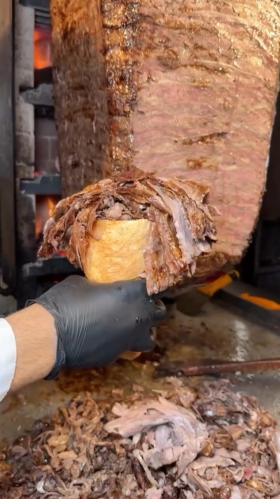
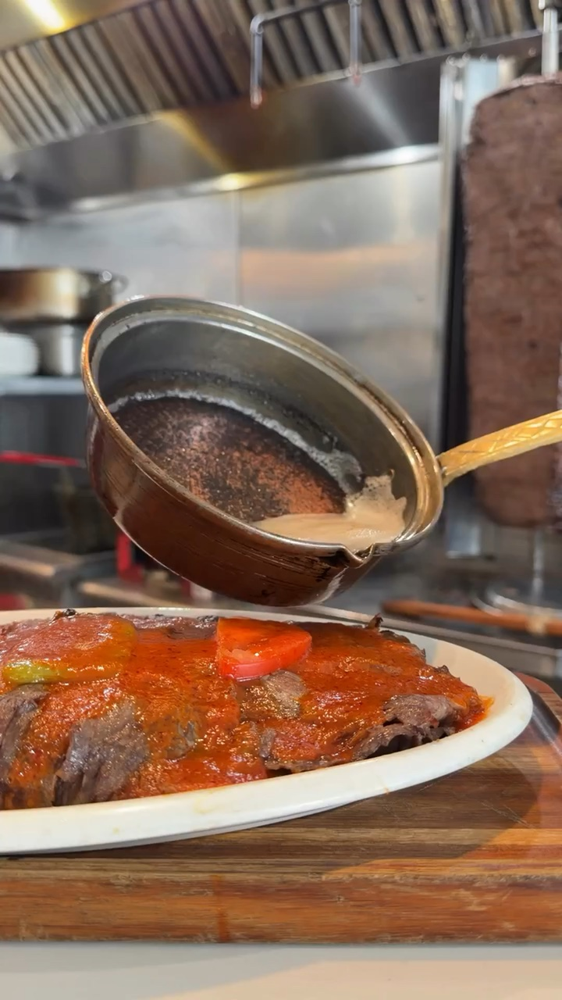

Reels 1 / 4
@kebapuzmaniomerusta
Menüyle gizleme ve yemek tabağını ortaya çıkarma üzerine kurulu restoran videosu; dışarıdan çekim, kişinin gözünden masa görüntüsüne geçiyor.
Örnek videoyu aç ↗
1Menü iner, tabak alınır
Ne çekiyoruz
Ahşap masadaki oval yemek tabağı ve yüzü örten kahverengi menü.
Nasıl
Menüyü yüzünün önünde açık tut, sonra göğsüne indir. Yardımcı tabağı sağa alsın. Menüyü kucağına indirip boş elini kameraya doğru kaldır.

2Menü kalkar, yemek görünür
Ne çekiyoruz
Soslu yemek ve sebze garnitürleriyle dolu oval metal servis tabağı.
Nasıl
Menüyü alttan kaldırıp açarak tabağın yerini ört. Yardımcı tabağı menünün arkasına koysun. Menüyü yukarı çek; telefonu tabağa yaklaştırıp sabitle.
Reels 2 / 4
@durumgaraj
Adana kebap servisinin beş kısa çekimi: şişli kebap, tabak ve tezgâh.
Örnek videoyu aç ↗
1Soğanlı kebap yakın
Ne çekiyoruz
Pide üstünde soğan ve domatesli şişli kebap
Nasıl
Eldivenli el şişteki kebabı tutsun; soğan, biber ve maydanoz görünsün.

2Salatalı pide servisi
Ne çekiyoruz
Pide üstünde kebap, yanında salata ve közlenmiş biber
Nasıl
Eldivenli el şişi tutsun; kebap ve salata hafif dumanla dursun.

3Sade kebap pide
Ne çekiyoruz
Tek şiş kebap, ızgara izli pidenin üstünde
Nasıl
Şişli kebap pidenin ortasında dursun; ızgara izleri ve yüzeyi görünsün.

4Servis tabağı
Ne çekiyoruz
Oval tabakta kebap, pide, domates, biber ve soğan
Nasıl
Eldivenli el kebabı tabakta çeksin; duman yükselsin, tabak dolu görünsün.

5Tezgâhta pide dizisi
Ne çekiyoruz
Tezgâhta alt alta dizili kebaplı pideler
Nasıl
Eldivenli el son pidenin üstüne kebabı koysun; sıra pideler görünsün.
Reels 3 / 4
@tandiretdoner
Dönerden kesilen etin ekmeğe doldurulması, eldivenli elle ve dönen kebap önünde çekilir.
Örnek videoyu aç ↗
1Et ekmeğe düşüyor
Ne çekiyoruz
Dönerden kesilen et dilimlerinin ekmeğe dolması
Nasıl
Bir elle ekmeği tut, diğer elle döner etini ekmeğin içine düşür.

2Eti ekmeğe bastırma
Ne çekiyoruz
Ekmeğin içindeki et ve eldivenli eller
Nasıl
Eldivenli elinle ekmeğin içindeki eti dağıt ve bastır.

3Bıçakla et kesme
Ne çekiyoruz
Dönerden bıçakla kesilen et ve ekmek
Nasıl
Bir elle bıçağı döner boyunca tut, diğer elle ekmeği altta tut.

4Ekmek dolup taşıyor
Ne çekiyoruz
Etle dolan ekmek ve arkada dönen döner
Nasıl
Ekmeği tutarken kesilen et ekmeğin üstüne yığılsın.

5Dolu ekmek ateş önünde
Ne çekiyoruz
Etle dolu ekmek ve arkadaki alev
Nasıl
Eldivenli elinle dolu ekmeği döner ve alevin önünde havada tut.
Reels 4 / 4
@donercornerusa
Tavadan et tabağına sos dökülen tek plan, üstünde kelime kelime beliren yazı.
Örnek videoyu aç ↗
1Sos dökme
Ne çekiyoruz
Beyaz tabakta kırmızı soslu et, üstüne tavadan dökülen sos
Nasıl
Tavayı tabağın üstünde eğip sosu yavaşça et üzerine akıt, son anda tavayı kaldır.
Hazırlanacaklar
- Oval metal tabağa soslu yemek ve sebze garnitürleri yerleştir.
- Büyük, kahverengi, katlanır bir menü hazırla.
- Açık ahşap masa ve desenli oturma alanı kur.
- Bir oturan kişi ve iki yardımcı görevlendir.
- Tabak ve menü hareketlerini çekimden önce prova et.
- Beyaz kâğıdı, tabağı ve pideleri hazırla
- Kebapları sıcak ve dumanlı tut
- Siyah eldiven tak, ışığı üstten ver
- Döner dikey şişte hazır ve pişiyor olsun
- Siyah eldiven ve beyaz önlük/kol giyin
- Ekmeği ortadan açıp hazır tutun
- Tabağı ahşap tezgâha koy, kenarlarını sil
- Tavaya sıcak sos hazırla
- Yazıyı montajda ekle, krem renkli ince serif seç
- Açık ahşap masa
- Oval yemek tabağı
- Kahverengi menü
- Desenli bank
- Çerçeveli duvar süsleri
- Aynı ahşap masa
- Büyük resimli katlanır menü
- Hazırlanmış oval yemek tabağı
- Restoran arka planı
- Şişli kebap
- Pide
- Soğan salatası
- Siyah eldiven
- Beyaz kâğıt
- Salata
- Közlenmiş biber
- Şiş
- Oval tabak
- Kebap
- Közlenmiş domates
- Kebaplı pideler
- Tezgâh
- Maydanoz
- Döner
- Ekmek
- Bıçak
- Ateş
- Beyaz tabak
- Et yemeği
- Bakır tava
- Sos
- Ahşap tezgâh